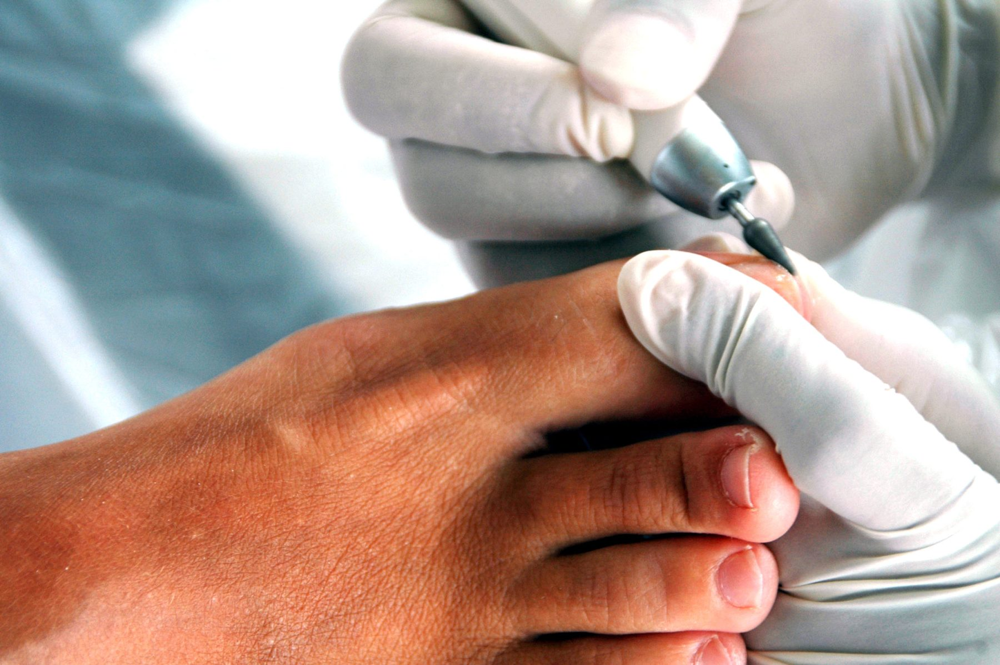
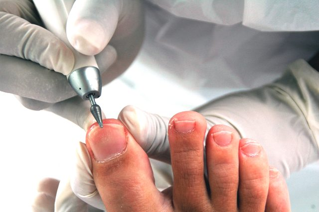
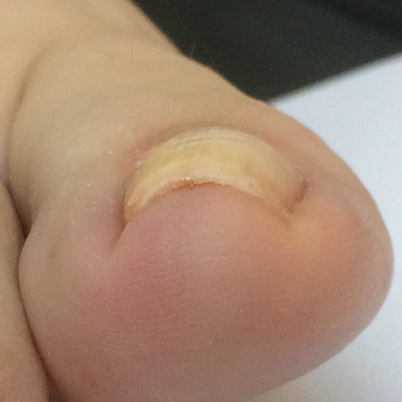
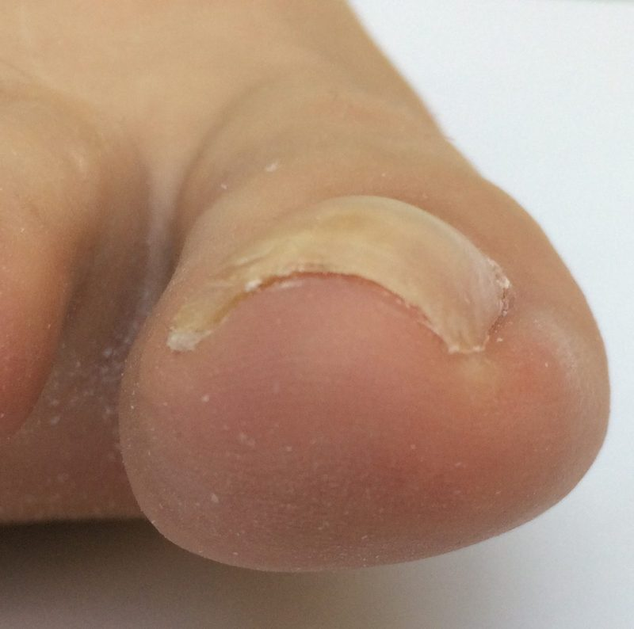

Voor al uw voetklachten, in Breda
Gediplomeerd pedicure en paramedisch chiropodist, sinds 2007. Uw afspraak plant u gewoon zelf online.

Pedicurebehandeling
Een complete, verzorgende behandeling voor uw voeten. Uw eerste bezoek duurt 45 minuten. Daarna kijken we samen of een vervolgbezoek van 30 of 45 minuten past.
- Voeten desinfecteren
- Nagels knippen, frezen en verzorgen
- Eelt verwijderen
- Kloven en likdoorns
- Schimmelnagels en ingroeiende nagels
- Afsluiten met verzorgende voetcrème
Diabetici en reumatici
Dezelfde behandeling, met extra zorg om voetproblemen te voorkomen.
Doorverwezen door de podotherapeut?
Pedicure Breda werkt samen met Hallux Voetexperts en Podotherapie Hermanns. Voor medisch noodzakelijke voetzorg gaat de rekening rechtstreeks naar de podotherapeut.


Ingroeiende nagel? Zonder operatie verholpen
Met de Arkada-techniek veranderen we de stand van de nagel. De druk is weg, de pijn neemt direct af en het resultaat ziet er natuurlijk uit, bijna niet te onderscheiden van uw eigen nagel.
- Geen operatieve ingreep
- Direct verlichting
- Direct resultaat
- Geen nare gevolgen achteraf
De behandeling duurt circa een uur, na 5 weken komt u terug voor controle. Ook geschikt voor tunnelnagels, stootnagels, traumanagels en zwakke nagels.
Afspraak makenIk ben Angela Oreel
Sinds 2007 ben ik gediplomeerd pedicure, sinds 2015 ook paramedisch chiropodist. In mijn praktijk aan de Heremiet kunt u terecht voor al uw voetklachten.
Ik werk volgens de Code van de voetverzorger: altijd met gereinigde en gedesinfecteerde instrumenten. En ik volg regelmatig bijscholing, zodat u steeds de best mogelijke zorg krijgt.
In de praktijk werk ik met Courtin Tea Tree. Die producten kunt u ook bij mij kopen, zodat u thuis verder kunt met dezelfde verzorging.
Afspraak maken
Plan zelf online een moment dat u uitkomt. Liever een bericht? Stuur een WhatsApp, sms of mail.
Pedicure Breda
Angela Oreel, pedicure en paramedisch chiropodist
Vraag buiten deze tijden? Stuur een WhatsApp, sms of mail.
Zo plant u online
Bij later afmelden wordt € 27,50 in rekening gebracht.